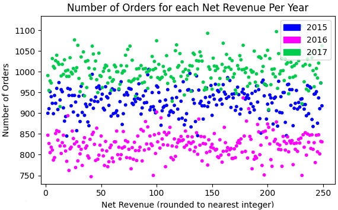
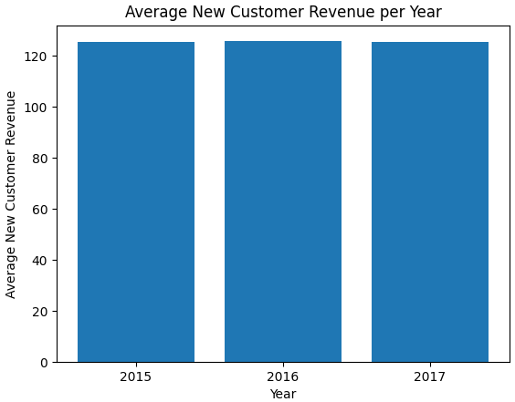

|

The first thing that comes to mind with this graph is likely the fact that the number of orders stays relatively constant for each net revenue for each year. This means that the fictional service/product gets equal business from all net revenues. In addition, the number of orders decreased for all net revenues from 2015 to 2016, but completely rebounded in 2017. |

The average revenue for new customers is almost exactly the same year over year at about $125. If this were a real company that had data on what these new customers actually spent their money on, perhaps we'd find some strong trends to analyze. |
|---|